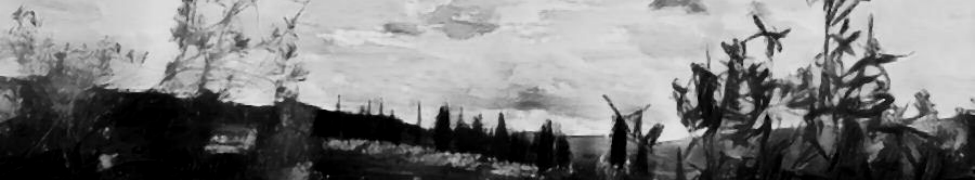
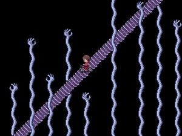

Interview with SelfishDream
30.08.17
 Hello
selfish dream! Are you ready for this?
Yes
I am ready. Initiate
Alright. 1.
So, tell us about yourself.
My
name is John, I'm from Greece and under the alias Selfish Dream I make
videos, music, art and games. I am 25 and i have a masters in
psychology
Interesting...
2. So what inspired you to make games?
Oh
I always wanted to make games. Even as a kid, despite the fact I didnt
have a computer, or the internet or any means to make a game Id draw
levels and games all the time on paper.Discovering flash back in 2011
opened up a new avenue to make those drawings come true.
3. Do you ever get comments about your games? Eh nothing special. Most of them boil down to "This is way too hard" or "I have no idea what any of this means" which I think is pretty understandable 4.
Did anyone ever help you with your games? or do you do all the stuff
alone (music, ideas)
I
do everything on my own. Even the testing. However sometimes my
girlfriend will provide some feedback or creative input on my ideas
which I appreciate wholeheartily.
5.
Good.. but what do you think about the future? Will you be making games
in the upcoming years?
Oh
definitely! My mind is overflowing with ideas and I want to see each
and every one come to fruition. I'd even like to make it my job, just
not in the conventional way.
I
don't want people to pay for my games, they'll always be free. But if
people like my work and want to support my work financially id like to
be able to give them that
opportunity in the future.
6.
Are there any games out there that you really like and maybe they
inspired you a little? or anything else (art, music)
Amon26
was a big inspiration and definitely Yume Nikki. As for art and music I
don't really have any inspirations besides people that with their work
stand out (Tonetta, Edgar Allan Poe) but I don't try mimicking their
style.
I just admire
their effort
 Yume
Nikki
7.
In this question we will test your psychological skills
there
2 men, 1 is eating a bag of glass, the other shoves a fork up his ass
are
they alright?
SPEEDOS: WAT Depends on the reason they're doing it 8.
What is your favorite color?
Red
because I'm edgy
9.
If you would have to pick between never hearing any music again and
dating a fat dog, which would you prefer?
Second
option of course, fat dogs are cute, even though the date would be
expensive if we went to dinner
10.
whats your catchprase
"There is
nothing in particular"
11.
Any final words?
Final words i wanna see on my deathbed
"Fuck"
Thank
you Selfishdream for participating in our first interview!
Back to Texts |